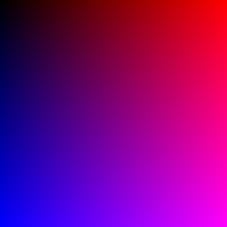
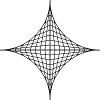
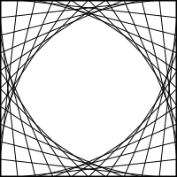
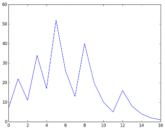
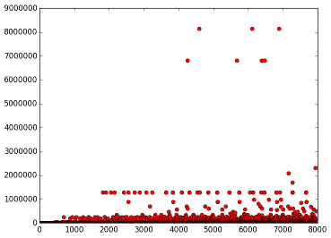
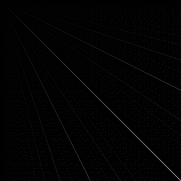
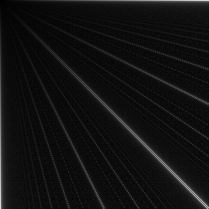
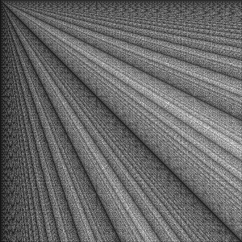

Zadanie 1: Rozcvička
A) Práca s grafikou
def imageTest():
img = Image.new("RGB", (256, 256))
pxA = img.load()
for i in range(256):
for j in range(256):
pxA[i,j] = (i, 0, j)
img.save('test.png')
def drawStar(s):
dwg = svgwrite.Drawing('star_normal', size=(s,s))
dwg.add(dwg.rect( (0,0), (s,s), fill='white') )
c = s // 2
keys = dict(stroke='black', stroke_width=1)
for vec in [(1,1), (-1,1), (1,-1), (-1,-1)]:
for step in range(0, c+1, c//10):
dwg.add(dwg.line( (c+step*vec[0], c), (c, c+c*vec[1]), **keys) )
dwg.add(dwg.line( (c, c+step*vec[1]), (c+c*vec[0], c), **keys) )
dwg.add(dwg.circle( (c+c*vec[0], c+c*vec[1]), c, fill='white', **keys) )
dwg.save()
def drawSquare(s):
dwg = svgwrite.Drawing('square', size=(s,s))
dwg.add(dwg.rect( (0,0), (s,s), fill='white', stroke='black', stroke_width=3) )
keys = dict(fill='none', stroke='black', stroke_width=1)
for step in range(s//10, s, s//10):
dwg.add(dwg.polyline( [(step, 0), (s, step), (s-step, s), (0, s-step), (step, 0)], **keys) )
dwg.save()Fig 1.A.1 - Test bitmapového obrázku.
Fig 1.A.2 - Test vektorového obrázku hviezda.
Fig 1.A.3 - Test vektorového obrázku štvorec.
C) Collatzova postupnosť
def getCollatzSeq(n):
res = [n]
while n > 1:
n = n // 2 if n % 2 == 0 else 3*n + 1
res.append(n)
return res
def plotCollatz(n):
plt.plot(getCollatzSeq(n))
plt.savefig('collatz')
def plotCollatzMax(n):
x = []
y = []
for i in range(2, n):
x.append(i)
y.append(max(getCollatzSeq(i)))
plt.plot(x, y, marker='o', color='r', ls='')
plt.savefig('collatz-max.png')Fig 1.C.1 - Graf dĺžky postupností.
Fig 1.C.2 - Graf maximov postupností.
D) Vizualizácia NSD
def nsd_sub(a,b):
c = 0
while a != b:
if a > b:
a -= b
else:
b -= a
c += 1
return a, c
def nsd(a, b):
c = 0
while b != 0:
x = b
b = a % b
a = x
c += 1
return a, c
def drawNSD(a,b):
m = a if a > b else b
img = Image.new('RGB', (a, b))
data = [(floor(255 * nsd(i,j)[0] / m),) * 3 for i in range(1,a+1) for j in range(1,b+1)]
img.putdata(data)
img.save('nsd_normal.png')
def drawPerfNSD(a,b):
img_s = Image.new('RGB', (a, b))
img_e = Image.new('RGB', (a, b))
data_s = [nsd_sub(i,j)[1] for i in range(1,a+1) for j in range(1,b+1)]
data_e = [nsd(i,j)[1] for i in range(1,a+1) for j in range(1,b+1)]
m_s, m_e = max(data_s), max(data_e)
img_s.putdata(list(map(lambda x: (floor(255 * x/m_s),)*3, data_s)))
img_e.putdata(list(map(lambda x: (floor(255 * x/m_e),)*3, data_e)))
img_s.save('nsd_perf_s.png')
img_e.save('nsd_perf_e.png')Fig 1.D.1 - Zobrazenie NSD(300,300).
Fig 1.D.2 - Zobrazenie počtu výpočtov pre nsd_sub.
Fig 1.D.3 - Zobrazenie počtu výpočtov pre nsd.
Zadanie 2: Kombinatorika, výpočty
A) Generovanie kombinácií, variácií a permutácií
def perm(l):
if not l:
return [l]
else:
res = []
for i in range(len(l)):
r = l[:i] + l[i+1:]
for x in perm(r):
res.append(l[i:i+1] + x)
return resB) Pascalov trojuholník
def drawPascalMod(n, d):
pallete = [(rand(0, 256),)*3 for i in range(d)]
img = Image.new('RGB', (n, n))
px = img.load()
A = npy.full((n,n), 1, int);
for j in range(2,n):
for i in range(1,j):
A[i,j] = (A[i-1,j-1] + A[i,j-1]) % d
px[i,j] = pallete[A[i,j]]
img.save('pascal.png')C) Aproximácia umocňovania
def fact(n):
res = 1;
for i in range(2,n+1):
res = res * i
return res
def powerInt(x, y):
res = 1
for i in bin(y)[2:]:
res *= res
if i == '1':
res *= x
return res
def nroot(x, n, eps):
g = x/n
dx = g
while abs(dx) > eps or not dx:
dx = (1/n) * (x/powerInt(g, n-1) - g)
g = g + dx
return g
def exp(x, k):
res = 0
for i in range(k+1):
res += powerInt(x,i)/fact(i)
return res
def loge(x, k):
n = len(str(int(x)))
a = x / powerInt(10, n-1)
y = (a - 1) / (a + 1)
res = 0
for i in range(k+1):
res += powerInt(y, 2*i + 1) / (2 * i + 1)
return res * 2
def powerFractionApprox(x, y, prec):
n = int(y*prec)
d = prec
return nroot(powerInt(x, n), d, 0.00001)
def powerExpApprox(x, y, prec):
return exp(y * loge(x, 100), prec)D) Výpočet pi
def piApproxGL(k):
pi = 0
s = 1
for i in range(k+1):
pi += s / (2*i + 1)
s *= -1
return 4 * pi
def piApproxArch(k):
a = 2 * sqrt(3)
b = 3
for i in range(k+1):
a = 2*a*b / (a+b)
b = sqrt(a*b)
return a
def piApproxMonteCarlo(k):
count = 0
for i in range(k):
x = random()
y = random()
if x**2 + y**2 < 1:
count += 1
return 4*count/kZadanie 3: Geometria, korytnačia grafika
A) Knižnica pre korytnačiu grafiku
class Turtle:
def __init__(self, filename, size=(200, 200), startx=0, starty=0):
self.x = startx
self.y = starty
self.alfa = 0
self.pts = [(self.x, self.y)]
self.dwg = make_drawing(filename=filename, size=size)
self.up = False
def forward(self, step):
x, y = step * cos(self.alfa * pi / 180), step * sin(self.alfa * pi / 180)
self.x += x
self.y += y
if not self.up:
self.pts.append((self.x, self.y))
def back(self, step):
self.forward(-step)
def left(self, alfa):
self.alfa -= alfa
def right(self, alfa):
self.left(-alfa)
def penup(self):
self.up = True
def pendown(self):
self.up = False
def save(self):
polyline(self.dwg, self.pts)
save_drawing(self.dwg)
def drawPolygon(turtle, n, d):
degree = 180 - (n-2)*180/n
for i in range(n):
turtle.forward(d)
turtle.right(degree)
turtle.save()
def drawStar(turtle, n, d):
degree = 180-180/n
for i in range(n):
turtle.forward(d)
turtle.right(degree)
turtle.save()B) Vykreslovanie relatívne vs. absolutne
def drawRelA(turtle, n, d):
degree = 180 - (n-2)*180/n
drawStar(turtle, n, 2*d * cos(degree/2 * pi/180))
turtle.left(degree/2)
for i in range(n):
turtle.forward(d)
turtle.right(degree)
turtle.save()
def drawAbsA(fname, n, r):
dwg = make_drawing(fname, size=(2*r,2*r))
degree = 180 - (n-2)*180/n
points = [(r + r*sin(i * degree* pi/180), r + r*cos(i * degree* pi/180)) for i in range(n)]
for i in range(n):
for p in points[i+1:]:
line(dwg, points[i], p)
save_drawing(dwg)
def drawRelB(turtle, s, r, c):
rdeg = 90
indeg = atan(s/(r*(s-s/r)))*180/pi
for i in range(c):
for j in range(4):
turtle.forward(s)
turtle.right(rdeg)
l = s/r
turtle.forward(l)
turtle.right(indeg)
s = sqrt((s-l)**2 + l**2)
turtle.save()
def drawAbsC(fname, r, n):
dwg = make_drawing(fname, size=(2*r, 2*r))
degree = 360 / (n*2)
points = [(r + r*sin(i * degree* pi/180), r + r*cos(i * degree* pi/180)) for i in range(n*2)]
for i in range(n * 2):
line(dwg, points[i], points[n-i])
line(dwg, points[i], points[-i])
save_drawing(dwg)C) Korytnačia grafika a fraktály
D) Kreativita korytnačky
Zadanie 4: Geometria, bitmapová grafika
A) Základne útvary
def drawCircleA(size, r):
img = Image.new("RGB", (size, size), 'white')
pxA = img.load()
for x in range(size):
for y in range(size):
if ((x-size/2)**2 + (y-size/2)**2) <= r**2:
pxA[x, y] = (0,0,0)
img.save('circleA.png')
def drawCircleB(size, r, prec):
img = Image.new("RGB", (size, size), 'white')
pxA = img.load()
for t in np.arange(0, 360, prec):
pxA[size/2 + r*cos(t*180/pi), size/2 + r*sin(t*180/pi)] = (0,0,0)
img.save('circleB.png')
def drawSpiral(size, mult, a, b):
img = Image.new("RGB", (size, size), 'white')
pxA = img.load()
for t in np.arange(0, 180 * mult, 0.1):
r = (a + b * t)
x = r*cos(t*pi/180)
y = r*sin(t*pi/180)
pxA[size/2 + x, size/2 + y] = (0,0,0)
img.save('spiral.png')
def drawElipse(size, a, b, angle):
img = Image.new("RGB", (size, size), 'white')
pxA = img.load()
c = size/2
rad = angle * pi / 180
for x in range(size):
for y in range(size):
p = ((x-c) * cos(rad) + (y-c) * sin(rad))**2 / a**2 + ((y-c) * cos(rad) - (x-c) * sin(rad))**2 / b**2
if p <= 1:
pxA[x, y] = (floor(p*255),)*3
img.save('elipse.png')B) Mnohouholník
C) Efekty
Bonus: Skrývačky
Zadanie 5: Geometrické algoritmy
A) Prisečníky úsečiek
def intersection(l1, l2):
x1, y1 = l1[0][0], l1[0][1]
x2, y2 = l1[1][0], l1[1][1]
x3, y3 = l2[0][0], l2[0][1]
x4, y4 = l2[1][0], l2[1][1]
px = ((x1*y2 - y1*x2)*(x3 - x4) - (x1 - x2)*(x3*y4 - y3*x4)) / ((x1 - x2)*(y3 - y4) - (y1 - y2)*(x3 - x4))
py = ((x1*y2 - y1*x2)*(y3 - y4) - (y1 - y2)*(x3*y4 - y3*x4)) / ((x1 - x2)*(y3 - y4) - (y1 - y2)*(x3 - x4))
r, s = (x2 - x1, y2 - y1), (x4 - x3, y4 - y3)
u = ((px - x1) / r[0], (py - y1) / r[1])
t = ((px - x3) / s[0], (py - y3) / s[1])
if 0 <= u[0] <= 1 and 0 <= u[1] <= 1 and 0 <= t[0] <= 1 and 0 <= t[0] <= 1:
return px, py
return False
def drawIntersections(l):
dwg = make_drawing('intersections.svg')
for lin in l:
line(dwg, lin[0], lin[1])
for i in range(len(l)):
for j in range(i+1, len(l)):
P = intersection(l[i], l[j])
if P:
circle(dwg, P, 1, stroke='red', fill='red')
save_drawing(dwg)B) Triangulácia
C) Konvexný obal
def checkCCW(p1, p2, p3):
return (p3[1]-p1[1])*(p2[0]-p1[0]) < (p2[1]-p1[1])*(p3[0]-p1[0])
def jarvis(pts):
dwg = make_drawing('hull.svg')
for p in pts:
circle(dwg, p, 0.5)
h = min(pts)
i = 0
P = [0]*len(pts)
while True:
P[i] = h
e = pts[0]
for p in pts:
if e == h or checkCCW(p, P[i], e):
e = p
i += 1
line(dwg, h, e)
h = e
if h == P[0]:
break
save_drawing(dwg)Zadanie 6: Fraktály a chaos
A) Chaos game
def chaosGame(size, P, r=2):
X = (random.randint(0, size[0]), random.randint(0, size[1]))
img = Image.new("RGB", size, 'white')
pxA = img.load()
for i in range(10000):
xr, yr = random.choice(P)
X = (X[0] + (xr-X[0])/r, X[1] + (yr-X[1])/r)
if i > 100:
pxA[X] = (0,0,0)
img.show()B) L-Systém
class LSystem:
def __init__(self, filename):
self.turtle = Turtle(filename)
self.cmds = {}
self.grammar = {}
self.axiom = ""
def configure(self, config):
self.cmds['+'] = lambda x=config['angle']: self.turtle.right(x)
self.cmds['-'] = lambda x=config['angle']: self.turtle.left(x)
self.cmds['['] = self.turtle.push
self.cmds[']'] = self.turtle.pop
self.axiom = config['axiom']
for N,r in config['G'].items():
self.grammar[N] = r
self.cmds[N] = lambda x=config['step']: self.turtle.forward(x)
def run(self, k):
s = self.axiom
n = ''
for i in range(k):
for j in range(len(s)):
n += self.grammar[s[j]] if s[j] in self.grammar else s[j]
s = n
n = ''
for c in s:
self.cmds[c]()
self.turtle.save()C) Feigenbaumov diagram
def plotFeigenbaum(x0, r, t=100, zoom=None):
x = x0
a = []
b = []
for i in range(t+1):
a.append(i)
b.append(x)
x = 4 * r * x * (1 - x)
plt.plot(a,b)
if zoom:
plt.xlim(zoom)
plt.show()Zadanie 7: Fraktály a komplexné čísla
A) Newtonov fraktál
def drawNewton(size, n=50):
img = Image.new("RGB", (size*2, size*2), 'white')
pxA = img.load()
r1, r2, r3 = 1, -0.5 + (sqrt(3)/2)*1j, -0.5 - (sqrt(3)/2)*1j
for (a, r) in enumerate(range(-size, size)):
for (b, c) in enumerate(range(-size, size)):
z = r + c*1j
for i in range(n):
if abs(z) > 0:
z = z - (z*z*z-1)/(3*z*z)
pxA[a,b] = ((abs(z-r1) <= 0.001)*255, (abs(z-r2) <= 0.001)*255, (abs(z-r3) <= 0.001)*255)
img.save('newton.png')B) Mandlebrotová množina
def drawMandelbrotset(s_r, s_c, n=256):
img = Image.new("RGB", (n, n), 'white')
pxA = img.load()
for (a, r) in enumerate(np.linspace(*s_r, num=n)):
for (b, c) in enumerate(np.linspace(*s_c, num=n)):
z = 0
for i in range(20):
z = z*z + (r + c*1j)
if abs(z) <= 2:
pxA[a,b] = (0,0,0)
img.save('mandelbrot.png')C) Júliova množina
def drawJuliaset(s_r, s_c, base, n=256):
img = Image.new("RGB", (n, n), 'white')
pxA = img.load()
for (a, r) in enumerate(np.linspace(*s_r, num=n)):
for (b, c) in enumerate(np.linspace(*s_c, num=n)):
z = r + c*1j
for i in range(20):
z = z*z + base
if abs(z) <= 2:
pxA[a,b] = (0,0,0)
img.save('julia.png')